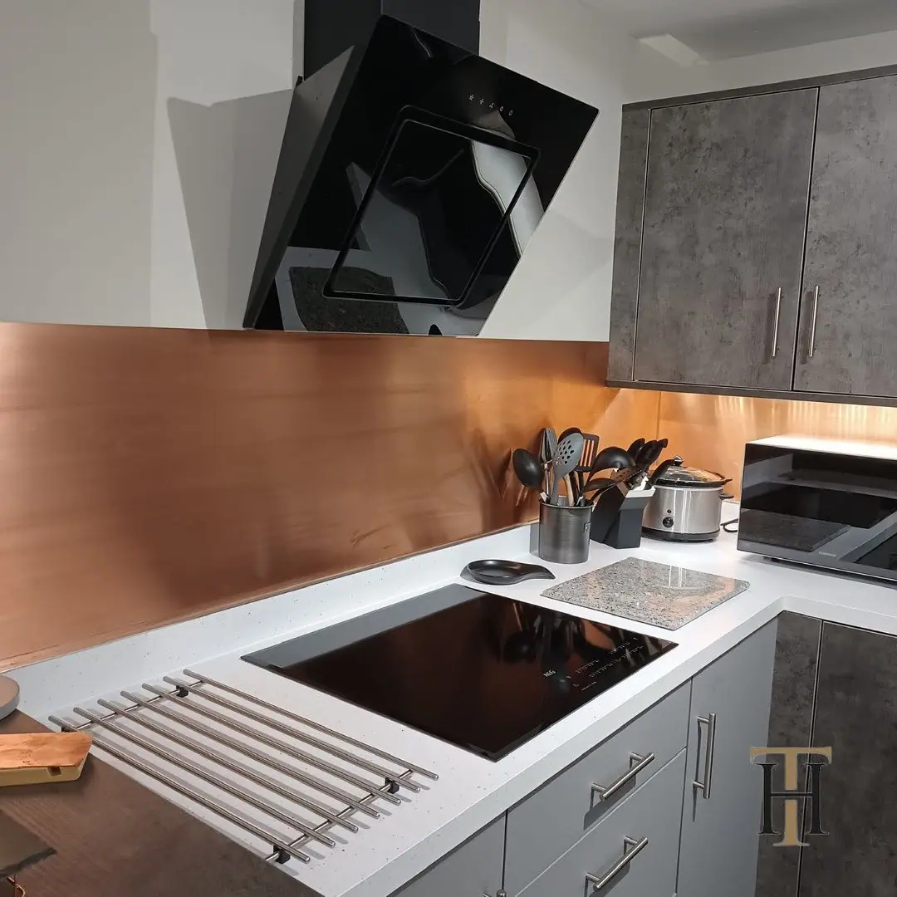
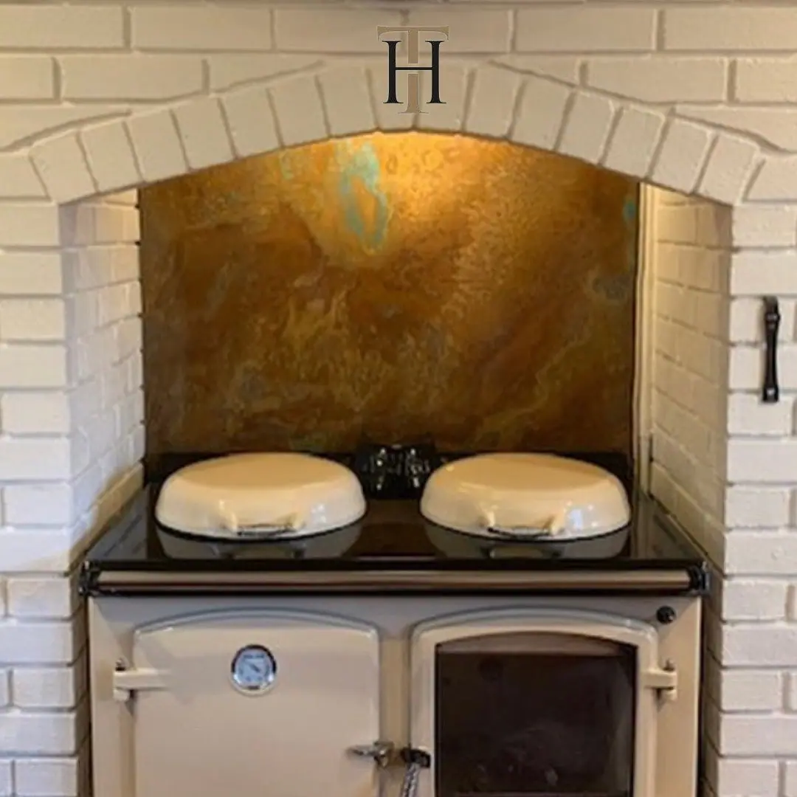

Zinc Sheets
Zinc is a great choice for those seeking a material that combines durability with a sleek, modern aesthetic. It offers excellent resistance to corrosion, making it ideal for both indoor and outdoor applications. In addition, Zinc’s versatile finish can easily complement a variety of styles, from industrial chic to minimalist elegance. Whether used in large installations or as subtle accents, Zinc provides a touch of sophistication and practicality that enhances any space.
CHOOSE A FINISH

CUT TO SIZE
- Pricing includes delivery and turnaround time is 5-6 weeks
- Each piece is coated in a gloss finish lacquer that prevents the sheet from further aging
READY TO GO
We can provide bespoke cut metal with each of our finishes being wrapped around wood and lacquer finished.
Please get in touch for a bespoke quote .
Copper sheet finishes
Copper sheet products are available in a selection of vibrant aged copper finishes or as natural copper. Both finishes utilise the flexibility of this malleable material alongside the characterful patina to deliver something truly special.
Aged copper sheet products are available in a range of designs and are protected by a tough, transparent lacquer. Natural copper sheet products provide the warm welcome the metal is so famous for, with or without lacquer.
Browse finishes on our shop page or choose a finish above.
BESPOKE COPPER SHEET PRODUCTS
All copper sheet products can be cut to size and provided as sheets or as finished products.
Order a copper worktop or tabletop for example and we can cut, shape and create a finished worktop all ready to install. It’s all part of the service!
Have a design in mind? If you can provide an illustration or example of what you want, our artisans can create it in copper. Contact one of our team to discuss your needs.
Copper is an exceptional metal that delivers practicality and beauty in one. Depend on Halman Thompson to take the best of copper and make it amazing!
C omplete our bespoke order form for a fast, free quotation or to discuss your copper design!
Gallery
Northumberland Gloss
Copper Splashback Behind Hob
Natural Copper – Table Top
Natural Copper – Kitchen Counter
Rustic Copper Wall Panels
Aged Copper – Fire
Copper – Green and Blue Veins
Northumberland – Vivid Greens and Teals
Dark and Rich Copper and Bronze
Aged Copper – Northumberland
Handmade Copper Bar Top
Custom Made Copper Bar Top for Garden Centre Restaurant
Hertfordshire
Northumberland Matt
Aged Copper – Kitchen Space
Aged Copper Custom Cupboard Doors
Hertfordshire
Aged Copper Backsplash
Copper AGA Splashback
Aged Copper Cupboard Doors
Patina Copper Splashback
Natural Copper
Northumberland – Light Patina
Aged Copper in Modern Kitchen
Ayrshire
Aged Copper Cheshire Finish
Kitchen Copper Splashback and Wall Panel
Aged Copper with blue patina
Copper Cupboard Doors in Ayrshire Finish
Natural Copper Splashback
Natural Copper
Cheshire Copper Finish with Matte Lacquer
Cheshire Finish with Gloss Laquer
Aged Copper Panels
Copper Backsplash with Verdigris
Aged Copper Splashback
Bespoke Table Inlay for G7 Summit in Cornwall
Cheshire Finish Kitchen Splashback
Hertfordshire
Aged Copper – Northumberland Splashback
Aged Copper
Northumberland Finish
Halman Thompson Kitchen Island and Splashback
Aged Copper Kitchen Splashback
Tattersalls029
Halman Thompson’s Aryshire Finish
Cheshire Copper Finish with Gloss Lacquer
Cheshire Copper Finish Backsplash
Natural Copper Kitchen Backsplash
Hertfordshire Gloss
Aged Copper Kitchen Splashback
Aged Copper – Northumberland Wall Art
Aged Copper – Northumberland Splashback
Natural Copper Kitchen Splashback
Copper and Exposed Wood Kitchen Design
Copper Panels Living Room Feature Wall
Aged Copper – Wall Panel
Copper Backsplash
White and Copper Kitchen
Aged Copper with Bright Blue Patina
Decorative Copper Sheet Behind Wine Rack
Ayrshire Finish
HT Copper panels
Projects


Northumberland Aged Copper Splashback and Plinths
Architecture , Copper , Copper Splashbacks , Interiors , Kitchens , Wall Panels
Northumberland Copper Splashback and Cooker Hood
Cooker Hoods , Copper , Copper Splashbacks , Interiors , Kitchens

Aged Copper Custom Table Top for Kitchen Island
Copper , Interiors , Kitchens , Table Tops , Worktops
Aged Copper Counter Top and Matching Splashback
Copper , Copper Splashbacks , Interiors , Kitchens , Table Tops , Worktops
Inspiration

20 Bedroom Interior Decor Ideas
Brass , Copper , DIY , Interiors
The bedroom is our personal sanctuary—a space where we begin and end each day. Creating a bedroom that reflects your personality while promoting relaxation and rejuvenation is essential for overall wellbeing. Whether you're seeking to completely transform your...

Innovative Restaurant Bar Design Ideas to Transform Your Commercial Space
Brass , Copper , DIY , Interiors
Creating a standout bar area in your restaurant is crucial for enhancing customer experience and boosting revenue. Whether you're designing a new space or upgrading an existing one, thoughtful design choices can transform your bar and restaurant into a memorable focal...

Inspiring Hotel Design Ideas for Luxury Guest Experiences
Brass , Copper , DIY , Interiors
Creating a memorable hotel experience requires more than just comfort and convenience. Guests expect exceptional aesthetics, thoughtful details, and an ambience that leaves a lasting impression. Whether you're developing a new hotel design concept or revamping an...
If you can dream it, we will create it.
We work with a variety of woods and metals to create bars, tables, balustrades, staircases, worktops, and much more.


If you can dream it, we’ll make it.
Bars, balustrades, staircases, worktops, cladding and pieces that don’t have a name yet. Our designers and craftspeople work in brass, copper, zinc and steel, and alongside wood.